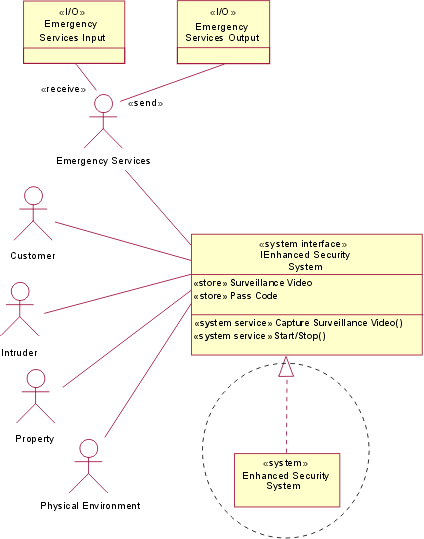
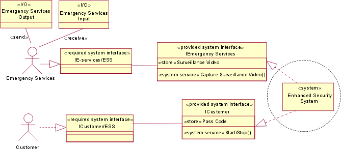

|
Introduction
Whereas the System Use-Case Model shows the behavioral context for the system, in this task you create a logical model
of the system in its environment, using the  Work Product: Use-Case Model and the Work Product: Supplementary Specifications to delineate, in a
Context Diagram: Work Product: Use-Case Model and the Work Product: Supplementary Specifications to delineate, in a
Context Diagram:
-
The interfaces to be realized by the system (in terms of the operations the systems provides, and the
associated protocols supported, the state variables and stores that the system realizes, and
attributes characterized as Technical Performance Measures).
-
The I/O entities that flow between the system and its actors.
-
The interfaces required by the system (to be realized by the actors which interact with the system) for
correct performance. Often, if the actor represents an existing system with which the system must communicate,
these required interfaces simply reflect constraints imposed by that other system.
A context diagram shows the top-level collaboration between the system and its actors. It is the structural analog to
the Use-Case Model for the system. This collaboration is created in the Analysis Model.
I/O entities (represented for modeling as "I/O" stereotyped classes with attributes but no operations) describe things
that flow into or out of the system, and can, in the general system case, include data, mass, energy, or physical
parts. I/O entities are associated (during modeling) with actor-system pairs, indicating that these particular I/O
entities flow between actor and system. They can optionally be shown on the diagrams, associated with the actor, and
the direction of flow is indicated by a stereotype "send"or "receive" on the association, indicating the direction
relative to the actor.
A System Operation is a service that can be requested from an object to effect behavior. An operation specifies the
name, type, parameters, and constraints for invoking an associated behavior. The Operations are grouped around
interfaces along the main responsibilities of the (sub)system under consideration. A system operation invocation
represents a finer grained interaction with the system than a use-case instance, and a use-case instance is a
composition of operation invocations and responses.
State variables and stores are attributes defined on the interfaces realized by the system. These are abstract and
require that the system maintain information corresponding to the type and multiplicity of the attribute and permit
storage, retrieval and modification of that information. There is no implication that there an attribute in the system
directly corresponds to the attribute defined at the interface. The difference between state variables and stores is
not intrinsic, it just reflects the way the attributes are used to control the operation of the system's (abstract)
state machine. A "state" persists over a period of time, unlike an event (such as the arrival of a signal) that occurs
at a point in time. The state machines mentioned here are finite state machines, and the delineation of "state" is
usually decided by relatively few variables; for example, the current state could be specified by the value of a single
attribute of an enumeration type. The reaction of the system however, to an event, might depend not only on the nature
of the event (and the information it carries, for example, in the operation parameters), and the current state, but
also on the value of (perhaps many) other attributes.
A Technical Performance Measure (TPM) is a key technical attribute selected from the Supplementary Specifications or
Use-Case Model as a critical indicator of system effectiveness, that, if not achieved, puts the system development at
risk of overrunning cost, schedule or performance constraints. The emerging values of such attributes are tracked over
the project lifetime. For example, it might be important that the delivered weight of a system be kept below a certain
limit, and the achievement of this target needs to be tracked as design and construction proceeds. The weight of the
system as delivered is obviously an attribute (which can be sensed in various ways) of an instance of the system, and
is not necessarily the same as the target weight during development (for a system to be launched into orbit you would
probably like it to be less). A UML tagged value can be used to annotate a TPM attribute to indicate the performance
target, for example:
"TPM" weight {maximum_weight = 1000kg}
Technical Performance Measures can also apply to other non-structural characteristics such as operation response time.
Tagged values can be applied to system operations, or the system itself, to record these.
|
Create initial Context Diagram
The following steps show evolving levels of detail of the system in context. The example illustrated is that of a
security system, protecting property from unauthorized intrusion, which, in addition to sounding an alarm, has the
ability to report breaches to some kind of response service.
As you evolve and add more detail to the Use-Case Model (discovering the actors; or if Business Modeling has been
performed, and actors and perhaps operations already identified, elaborating their interaction), you can create the
initial collaboration and illustrate this with a Context Diagram. The Context Diagram can be created as shown,
initially with the system interfaces abstracted away. The system is depicted as a top-level subsystem (stereotyped
"system"), which eventually realizes several interfaces. Actors and their associations are also shown, again, with no
detail initially.

Context Diagram (initial)
|
Refine associations and interfaces
Next, you refine the associations between actors and system, and the system interface. You can start to reason about
the system operations and the system attributes as they emerge from Task: Find Actors and Use Cases (Later: Task: Detail a Use Case). Note that now the system appears to the
actors, by showing the interface. The realization of this can be shown if you wish (highlighted by the dashed circle in
the diagram), but can be omitted without much loss of information.
At this stage, only tentatively identify the I/O entities, based on domain knowledge and any work done previously in
realizing use cases at the enterprise level. Note that it is not required that the I/O entities be shown on the
diagram, but this can be helpful in reasoning about actor-system interactions.
Thus, you can start to characterize the connection(s) between actor and system (for example, record the protocol
required) and record the entities that flow between them.

Context Diagram (preliminary)
|
Detail system operations and other system characteristics
In this step, you start to construct use-case scenarios (instances of use cases) from which you can describe system
operations (provided and required). The scenarios can be illustrated by interaction or activity diagrams. Each
black-box step in a use case represents a finer-grained interaction with the system and maps to a operation invocation
(but not necessarily a unique operation; other black-box steps might use the same operation). As well as defining the
system operations in the Context Diagram (and hence in the Analysis Model), the use cases are also annotated, for
traceability, to the operations invoked. The operations also inherit any performance requirements or other
non-functional requirements that have been allocated to the black-box steps. As you examine each black-box step
performed in the scenario, you discover the use of names that might suggest state variables and stores that the system
must maintain to execute the use-case scenario. You can also refine the I/O entities that are required and
associate these with operation invocations to form the signals sent between actor and system.
It might aid understanding to divide the system interface into more specific interfaces; indeed, there can be interface
requirements in the Supplementary Specification which drive this. The illustration below shows the evolution of the
system interface into a "provided system interface" for each actor type, although this is not a fixed prescription.
Actors might share an interface, or there could be more than one interface for an actor.
This analysis might also identify interfaces required by the system, that is, interfaces that must be supported
by the actors (to process messages from the system). These can be added to the diagram in a symmetrical way (for
example, see the IE-services/ESS "required system interface" realized by the Emergency Services actor in the diagram
below). Again, (although this is not shown) an actor might support (realize) more than one interface.
The operations, stores and so forth., need to be added to an expanded form of the interfaces (in the attribute and
operation compartments) as shown. The diagram is only partially elaborated (in the interests of space). The physical
environment interface, actor and so forth, have not been expanded. Again, the realization of the provided system
interfaces can be omitted without much loss of information.

Context Diagram (final).
This top-level collaboration, captured in the Context Diagram, allows the interfaces, connections, what flows into and
out of the system, and associated performance characteristics, to be rigorously specified, enabling system development
to proceed somewhat independently from other elements in the system's context.
|
|